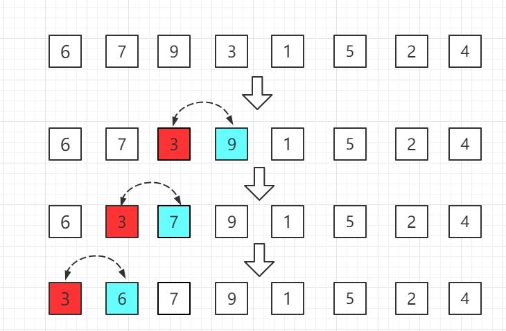
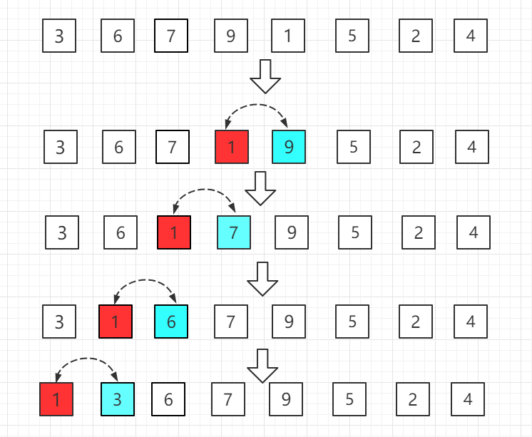

挿入ソート
挿入ソート（Insertion Sort）は、一般に直接挿入ソートとも呼ばれ、少数の要素のソートに対して有効なアルゴリズムです。
挿入ソートは最も簡単なソート方法の一つで、その基本思想は、1つのレコードを既にソート済みの順序表に挿入し、それによってレコード数が1増えた新しい順序表を得るというものです。
その実装過程では二重ループを使用し、外側のループは最初の要素以外のすべての要素に対して、内側のループは現在の要素より前のソート済み部分に対して挿入位置を探し、移動を行います。

動作原理
挿入ソートの核心的な考え方は「ソート済みシーケンスを構築する」ということです。ソート対象の配列（またはリスト）を論理的に2つの部分に分けます：
- ソート済み部分：初期状態では、通常、配列の最初の要素自体が1つのソート済みシーケンスであると見なします。
- 未ソート部分：2番目の要素から最後の要素までです。
アルゴリズムは未ソート部分の最初の要素をソート済み部分の正しい位置に挿入することを繰り返し、未ソート部分が空になるまで続けると、配列全体がソートされた状態になります。
適用説明
挿入ソートの平均時間計算量もO(n^2)、空間計算量は定数オーダーですO(1)。具体的な時間計算量は配列のソート状態にも関連しています。
挿入ソートでは、ソート対象の配列がソート済みの場合が最良のケースで、現在の数と前の数だけを比較すればよいため、このときに必要な比較は全部でN-1回であり、時間計算量はO(N)です。最悪のケースはソート対象の配列が逆順の場合で、このとき比較回数が最も多くなります。最悪の場合はO(n^2)。
過程の図
仮に前のn-1（ただしn>=2）個の数は既にソート済みであるとします。ここで第 nn番目の数を前にソート済みのシーケンスに挿入し、自分に適した位置を見つけて、n番目の数を挿入したこのシーケンスもソート済みになるようにします。
この方法で全ての要素を挿入し、シーケンス全体がソートされるまでの過程を挿入ソートと呼びます。
昇順（小さいものから大きいものへ）の挿入ソートの全過程は図の通りです：
第1ラウンド：2番目の位置の6から比較を始め、前の7より小さいので位置を交換します。

第2ラウンド：3番目の位置の9は前の位置の7より大きいので、位置を交換する必要はありません。

第3ラウンド：4番目の位置の3は前の位置の9より小さいため位置を交換し、順に前と比較していきます。

第4ラウンド：5番目の位置の1は前の位置の9より小さいため位置を交換し、さらに順に前の要素と比較していきます。

......
このようにして、最後の要素まで順に比較していきます。
Java 実装例コード
ソースコードパッケージのダウンロード：Download
部分コード：
InsertionSort.java のファイルコード：
/**
* 挿入ソート
*/
public class InsertionSort {
// 核心コード---開始
public static void sort(Comparable[] arr){
int n = arr.length;
for (int i = 0; i < n; i++) {
// 要素 arr[i] に適した挿入位置を探す
for( int j = i ; j > 0 ; j -- )
if( arr[j].compareTo( arr[j-1] ) < 0 )
swap( arr, j , j-1 );
else
break;
}
}
// 核心コード---終了
private static void swap(Object[] arr, int i, int j) {
Object t = arr[i];
arr[i] = arr[j];
arr[j] = t;
}
public static void main(String[] args) {
int N = 20000;
Integer[] arr = SortTestHelper.generateRandomArray(N, 0, 100000);
InsertionSort.sort(arr);
for( int i = 0 ; i < arr.length ; i ++ ){
System.out.print(arr[i]);
System.out.print(' ');
}
}
}
アルゴリズムの実装とコード解説
原理を理解したところで、具体的なコード実装を見てみましょう。ここでは Python と Java という2つの一般的な言語のバージョンを紹介します。
Python 実装
例
"""
挿入ソートアルゴリズムの実装（昇順）
:param arr: ソート対象のリスト
:return: ソート後のリスト（インプレースで変更し、返します）
"""
# 2番目の要素から最後の要素までループ（インデックス 1 から n-1）
for i in range(1, len(arr)):
current_value = arr[i] # 現在挿入する要素を、とりあえず「手に持つ」
j = i - 1 # j はソート済みシーケンスの最後の要素を指す
# 内側ループ：current_value の挿入位置をソート済み部分 arr[0..i-1] 内で探す
# 条件1: j >= 0 でリストの先頭より前に越境しないことを保証
# 条件2: arr[j] > current_value は、比較中の要素が「手元の」要素より大きいことを示すため、後方へ移動する必要がある
while j >= 0 and arr[j] > current_value:
arr[j + 1] = arr[j] # 大きい方の要素を後方へ1つ移動し、空き位置を作る
j -= 1 # 左の次の要素と比較を続ける
# ループが終了したら、挿入位置 (j+1) が見つかったことになる
# このとき arr[j] <= current_value または j == -1
arr[j + 1] = current_value # 「手元の」要素を正しい位置に挿入する
return arr
# テストコード
if __name__ == "__main__":
# テストデータ
test_data = [64, 34, 25, 12, 22, 11, 90]
print("ソート前:", test_data)
sorted_data = insertion_sort(test_data.copy()) # コピーを使用してソートし、元のデータに影響を与えない
print("ソート後:", sorted_data)
# 別のテスト：ほぼソート済みのデータ
nearly_sorted_data = [1, 3, 2, 4, 6, 5, 8, 7]
print("\nほぼソート済みデータのソート前:", nearly_sorted_data)
print("ほぼソート済みデータのソート後:", insertion_sort(nearly_sorted_data.copy()))
Java 実装
例
public static void insertionSort(int[] arr) {
// 2番目の要素から最後の要素までループ（インデックス 1 から n-1）
for (int i = 1; i < arr.length; i++) {
int currentValue = arr[i]; // 現在挿入する要素
int j = i - 1; // j はソート済みシーケンスの最後の要素を指す
// 内側ループ：挿入位置を探して要素を移動する
while (j >= 0 && arr[j] > currentValue) {
arr[j + 1] = arr[j]; // 要素を後方へ移動
j--;
}
// 現在の要素を正しい位置に挿入
arr[j + 1] = currentValue;
}
}
// オーバーロードされたメソッド。int配列の一部に対するソートをサポートする
public static void insertionSort(int[] arr, int left, int right) {
for (int i = left + 1; i <= right; i++) {
int currentValue = arr[i];
int j = i - 1;
while (j >= left && arr[j] > currentValue) {
arr[j + 1] = arr[j];
j--;
}
arr[j + 1] = currentValue;
}
}
public static void main(String[] args) {
// テストデータ
int[] testData = {64, 34, 25, 12, 22, 11, 90};
System.out.print("ソート前: ");
printArray(testData);
int[] dataToSort = testData.clone(); // コピーを使用
insertionSort(dataToSort);
System.out.print("ソート後: ");
printArray(dataToSort);
}
private static void printArray(int[] arr) {
for (int num : arr) {
System.out.print(num + " ");
}
System.out.println();
}
}
アルゴリズムの特性分析
アルゴリズムの性能と適用シーンを理解することは非常に重要です。挿入ソートの特性は次のようにまとめられます：
| 特性 | 説明 | 解説 |
|---|---|---|
| 時間計算量 | 平均および最悪の場合：$O(n^2)$ | ネストしたループで要素の比較と移動を行う必要があります。n 個の要素の場合、最悪時（完全な逆順）には約 $\frac{n(n-1)}{2}$ 回の比較と移動が必要です。 |
| 最良の場合：$O(n)$ | 入力配列がほぼソート済みの場合、内側ループはほとんど実行されないか、すぐに終了するため、n-1 回の比較だけで済みます。 | |
| 空間計算量 | $O(1)$ | であるインプレースソートアルゴリズムであり、定数レベルの追加スペースのみが必要です（例：current_value, jなどの変数）。 |
| 安定性 | 安定 | 2つの要素が等しい場合、ソート後もそれらの相対的な順序は維持されます。なぜならアルゴリズムは、現在の値より大きい場合にのみ要素を移動するからです。 |
| 適用シーン | 1. 小規模データ 2. ほぼソート済みのデータ 3. 高度なソートアルゴリズム（クイックソート、マージソートなど）のサブプロセスとして |
これらの場合、その単純なロジックと低い定数オーバーヘッドにより、より複雑な $O(n \log n)$ アルゴリズムよりも優れた性能を発揮することがあります。 |
時間計算量の公式導出（最悪の場合）
最悪の場合（配列が完全に逆順）では：
- 1番目の要素（インデックス0）の挿入時は、比較0回です。
- 2番目の要素（インデックス1）の挿入時は、比較1回、移動1回です。
- 3番目の要素（インデックス2）の挿入時は、比較2回、移動2回です。
- ...
- n番目の要素（インデックス n-1）の挿入時は、比較 n-1 回、移動 n-1 回です。
合計の比較・移動回数は次の通りです： $0 + 1 + 2 + ... + (n-1) = \frac{n(n-1)}{2}$
したがって、時間計算量は $O(n^2)$ です。